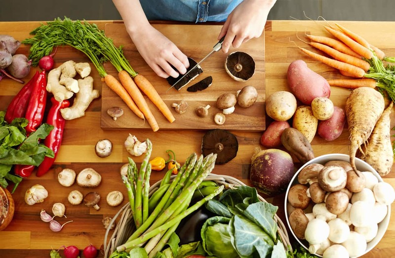

อาหารหมู่ที่ 3 วิตามินพืชผัก
อาหารหมู่ที่ 3 ประกอบไปด้วยผักต่างๆ ไม่ว่าจะเป็นตำลึง ผักกาด ผักบุ้ง ผักใบเขียวต่างๆ และผักชนิดอื่นๆ ที่สามารถนำมารับประทานได้โดยไม่ก่อให้เกิดอันตราย ซึ่งอาหารประเภทนี้จะมีส่วนในการให้วิตามินและเกลือแร่แก่ร่างกาย อีกทั้งยังช่วยเสริมสร้างเพื่อให้ร่างกายมีความแข็งแรงมากยิ่งขึ้น ให้ร่างกายได้มีแรงต้านทานต่อเชื้อโรคชนิดต่างๆ แถมยังทำให้อวัยวะต่างๆ ในร่างกายสามารถทำงานได้เป็นปกติอีกด้วย
ประเภทของสารอาหารหมู่ที่ 3ประเภทของสารอาหารที่ร่างกายจะได้รับจากการทานอาหารในหมู่ที่ 3 นี้ก็คือวิตามิน ซึ่งเป็นวิตามินในกลุ่มของสารอินทรีย์ และยังเป็นสารอาหารที่ร่างกายต้องการจำนวนน้อย เพื่อทำให้เกิดปฏิกิริยาต่างๆ ในร่างกายได้อย่างปกติ เนื่องจากร่างกายไม่สามารถสร้างวิตามินเองได้ ดังนั้นจึงเกิดอาการอาศัยสมบัติของการละลายตัวของวิตามิน และทำให้เกิดการแบ่งวิตามินออกเป็น 2 จำพวกคือ วิตามินที่ละลายตัวในไขมัน และวิตามินที่ละลายในน้ำ
1. วิตามินที่ละลายตัวในไขมัน คือ วิตามินเอ วิตามินดี วิตามินอี และวิตามินเค ซึ่งเป็นวิตามินที่มีการดูดซึมโดยการต้องอาศัยไขมันในอาหาร มีหน้าที่ทางชีวเคมีที่เกี่ยวข้องกับการสังเคราะห์โปรตีนบางชนิดในร่างกาย
2. วิตามินที่ละลายในน้ำ คือ วิตามินทั้ง 9 ตัว ได้แก่ วิตามินซี วิตามินบี1 วิตามินบี2 วิตามินบี3 วิตามินบี12 ไนอาซิน กรดแพนโทนิก ไบโอติน และโฟลาซิน เป็นวิตามินที่มีหน้าที่ทางชีวเคมีคือ เป็นตัวเร่งปฏิกิริยาหรือทำให้ปฏิกิริยาของร่างกายดำเนินไปได้
ประโยชน์ของสารอาหารหมู่ที่ 31. ช่วยในการมองเห็นของดวงตา โดยเฉพาะในสถานที่ที่มีแสงสว่างน้อย
2. ช่วยเผาผลาญโปรตีนที่อยู่ในร่างกาย เพื่อให้เกิดพลังงาน
3. มีส่วนสำคัญต่อการทำงานของเซลล์ในร่างกาย ไม่ว่าจะเป็นระบบประสาท ไขกระดูก หรือทางเดินอาหาร
ถ้าร่างกายขาดวิตามินพืชผักจะมีผลอย่างไรโปรตีนเป็นสารอาหารที่มีความสำคัญต่อร่างกายเป็นอย่างมาก โดยเฉพาะการช่วยเสริมสร้างการเจริญเติบโตของร่างกายและซ่อมแซมส่วนที่สึกหรอ ดังนั้นเมื่อขาดโปรตีนหรือได้รับโปรตีนจากอาหารน้อยเกินไป ก็จะมีผลต่อร่างกายดังต่อไปนี้
- จะทำตาพล่า เห็นไม่ชัด มองในมืดไม่เห็นตาสู้แสงไม่ได้ ระคายเคือง
- ผอมแห้ง ง่ายต่อการติดโรคและง่ายต่อการแพ้สิ่งต่าง ๆ
- มีปัญหาเวลาขับรถกลางคืน
- ที่ตามีฝ้าขาวซึ่งชาวบ้านเรียกว่า ตาเป็นเกล็ดกระดี่
- ผมและขนจะร่วง ผมแห้ง เล็บเปราะ ผิวหนังตกสะเก็ด และย่นก่อนวัย
- เบื่ออาหาร ความรู้สึกรับรสและกลิ่นไม่ดี